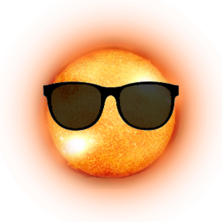

שלב 6-ויטמין D
היום בשיעור מדעים חקרנו על ויטמין D,
גילינו שיש לויטמין D כמה תפקידים,קצת מקורות ומחסור בו גורם להרבה מחלות,ורק ששמנו אותם אחד ליד השני ראינו את החשיבות האמיתית שלו
ויטמין D הוא למעשה גם ויטמין וגם הורמון המיוצר מכולסטרול. ויטמין זה שייך לקבוצה של הויטמינים הממיסים בשמן, נאגר למשך תקופות ארוכות בכבד ובתאי השומן ולאחר מכן הוא נספג במעיים. ויטמין זה התגלה בשנות ה-20 של המאה ה21, וחלק ממנו אחרי בין היתר על הסידן והזרחן בגוף האדם.
תפקידיו הם לספוג סידן מהמעיים ולסייע בחיזוק מערכת החיסון ומחסור בו יכול לגרום למחלות כמו דלקת מפרקים, מחלות כבד, מחלות בבלוטת התריס,פסוריאזיס, דיכאון וחרדה, שפעת ואפילו סכרת ילדים וסרטן,דלקות זיהומיות,מחלות לב,מחלות כלי דם,צינון ושיעול.
מקורותיו בקרני השמש ושמן דגים.
